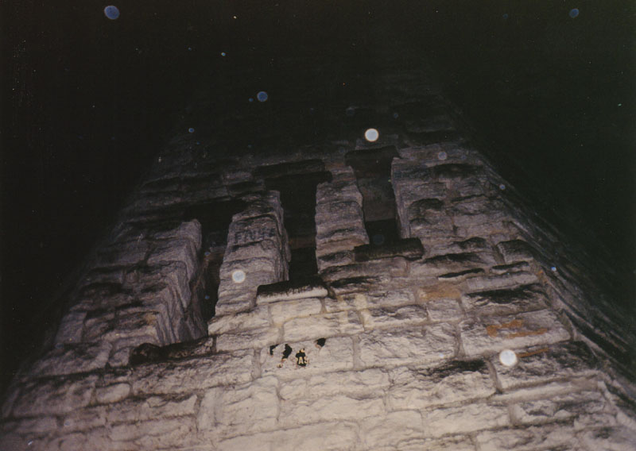

Overlooking Dayton's Community Golf Course on Patterson Avenue is a stone turret-shaped structure familiarly known as Frankenstein's Castle (or Patterson Tower, or the Witch's Tower). No Frankenstein ever lived here, of course, but many people do say that ghosts occupy the tower--remnants of a fatal incident which supposedly occurred in the 1960s.
The story says that a group of teenagers was playing inside the tower while a summer storm raged outside. Lightning struck the tower and electrocuted two of them through the metal railing along the spiral staircase. Ever since then, lightning flashes during storms reveal their silhouettes inside. They may haunt it in other ways as well, their imprints as indelibly burned into the atmosphere of the place as their outlines were burned into the wall when the lightning hit.

Workers at the Hills and Dales Park, where the tower is located, keep a fairly close eye on the structure, bolting more heavy boards across the slit windows whenever vandals break the old ones off to get inside. They're frustrated by the attention this anachronistic building gets, especially around Halloween. The lightning incident likely never happened; I'd be happy to get a report from someone who knows differently, but until then I think it's realistic to chalk it up to folklore.
In reality, Frankenstein's Tower was probably a fire tower or lookout post, built either by the Patterson family at the Patterson Homestead, or the CWA for the park in the 1930s.
My own trip there in late 2001 yielded nothing but the dark and inadequate photos you see above (all but the the first, which was contributed). The "orbs" in the pictures might lead some to think that something otherwordly was present when I walked around the sealed-up tower, but I'm not sure that's enough to convince me. I'd definitely like to make it inside sometime. A number of people who have been there have seen things they couldn't explain; to read some of their stories, click below.
If you've been there or have anything else to share about the building, please feel free to contact me.
Ghostly Encounters at Frankenstein's Castle
Franklin County Ghost Debunkers: Frankenstein's Castle
Back
Sources
Woodyard, Chris Haunted Ohio III. Beavercreek, OH: Kestrel Publications, 1994. pp. 145.